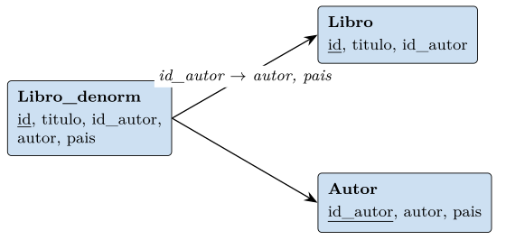
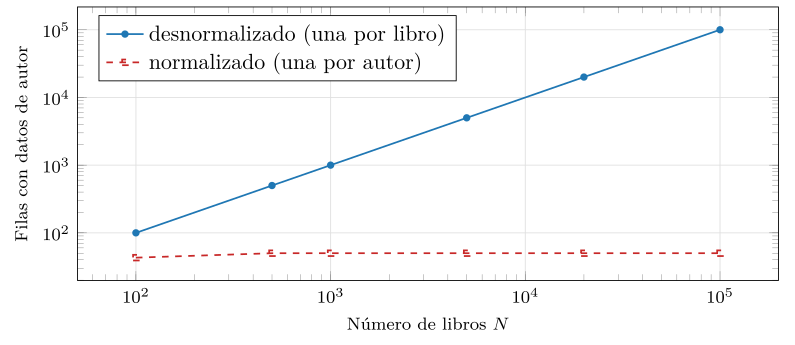

Capítulo 4. Diseño y normalización
El capítulo 3 mostró todo lo que SQL puede preguntar; este muestra que ese poder no sirve de nada sobre un esquema mal diseñado. Si una sola relación mezcla hechos independientes —los datos del libro y los de su autor en la misma tupla—, cada dato del autor se repite en cada uno de sus libros, y con la repetición vuelven, ahora dentro de una base relacional, las anomalías de actualización que el fichero plano del capítulo 1 sufría. Diseñar bien es el reverso de consultar bien: antes de escribir una buena consulta hay que repartir la información entre relaciones de modo que cada hecho viva una sola vez.
El capítulo recorre ese reparto en dos movimientos. El primero es el diseño conceptual: el modelo entidad-relación, que captura el dominio —qué cosas hay y cómo se relacionan— antes de pensar en tablas, y se traduce mecánicamente a un esquema relacional. El segundo es la teoría que dice cuándo un esquema está bien repartido: las dependencias funcionales, que formalizan qué determina qué, y las formas normales, que se alcanzan descomponiendo las relaciones hasta eliminar la redundancia. Esa descomposición es la misma que asomó al final del capítulo 2 —partir una relación en dos cuya reunión la reconstruya—, ahora convertida en una teoría con garantías: que la reunión no pierda ni invente información.
Y el capítulo cierra con un matiz que el resto del libro necesita: la desnormalización razonada. Normalizar elimina la redundancia pero encarece las consultas, que han de reunir lo que se separó; a veces conviene romper la pureza y repetir datos a propósito, por rendimiento. Saber cuándo hacerlo exige conocer primero la norma. Y no es un asunto menor para lo que viene: los motores NoSQL de la segunda parte y los almacenes vectoriales de la cuarta viven, a menudo, desnormalizados por diseño —un documento que embebe sus datos, una fila que lleva el vector junto a sus metadatos—. Entender la normalización es, precisamente, lo que permite desnormalizar con criterio en lugar de por ignorancia.
El modelo entidad-relación
Antes de declarar tablas conviene modelar el dominio, y la herramienta clásica para ello es el modelo entidad-relación (ER). No es un modelo de almacenamiento, sino de pensamiento: describe el mundo que la base representará, en términos que un experto del dominio entiende sin saber SQL.
Una entidad es una clase de objetos del dominio con existencia propia —un libro, un autor, un socio—. Cada entidad tiene atributos que la describen, uno o varios de los cuales forman su identificador. Una relación (en el sentido del ER, no en el del capítulo 2) asocia entidades —un autor escribe un libro—, y lleva una cardinalidad que dice cuántas entidades de cada lado participan: uno a uno, uno a muchos o muchos a muchos. La figura 4.1 muestra el caso de uno a muchos entre autor y libro: un autor escribe muchos libros, cada libro tiene un autor.
El modelo ER es el nivel conceptual del capítulo 1 hecho dibujo: captura la estructura del dominio con independencia de cómo se almacene. Su valor es que obliga a decidir, antes de teclear, qué es una entidad y qué un atributo, y qué cardinalidad tiene cada relación —decisiones que, tomadas mal, ningún SQL posterior arregla—.
El ER básico se enriquece con varias construcciones que conviene reconocer porque modelan situaciones frecuentes. Una entidad débil no tiene identificador propio y existe solo en función de otra: un ejemplar concreto de un libro se identifica por el libro más un número de copia, no por sí solo. La especialización (relación ISA) captura que una entidad es un caso de otra —un autor y un traductor son ambos personas—, con atributos heredados y propios. Una relación puede ser ternaria, asociando tres entidades a la vez —un autor escribe un libro en una editorial—, y no siempre se descompone en binarias sin perder información. Las restricciones de participación dicen si una entidad debe participar en una relación (total) o puede no hacerlo (parcial): si todo libro debe tener autor, la participación de Libro en escribe es total. Y una relación puede llevar atributos propios —la fecha en que un socio toma prestado un libro pertenece al préstamo, no al socio ni al libro—. Cada refinamiento tiene su regla de mapeo, y juntos explican por qué un esquema real rara vez es una traducción ingenua de «una tabla por cosa».
Del modelo al esquema relacional
El paso del ER al esquema relacional es casi mecánico, y conviene conocer las reglas porque explican por qué un esquema tiene la forma que tiene. Cada entidad se convierte en una relación, con sus atributos como columnas y su identificador como clave primaria. Una relación uno a muchos se representa con una clave ajena en el lado «muchos»: el libro guarda el id_autor de su autor, como en el esquema de los capítulos anteriores. Una relación muchos a muchos —un libro puede tener varios temas y un tema varios libros— no cabe en una clave ajena y exige una relación intermedia: una tabla nueva, libro_tema, cuya clave primaria combina las claves ajenas a ambos lados. Los atributos multivaluados y compuestos del ER se resuelven, también, con relaciones aparte o con los tipos compuestos del capítulo 3.
Un ejemplo concreto fija las reglas. Un dominio con entidades \(\mathrm{Libro}\), \(\mathrm{Autor}\) y \(\mathrm{Tema}\), una relación uno a muchos \(\mathrm{escribe}\) (un autor, muchos libros) y una muchos a muchos \(\mathrm{trata}\) (un libro, varios temas; un tema, varios libros) se mapea a: \[\begin{aligned} &\mathrm{Autor}(\underline{\mathit{id\_autor}},\mathit{nombre}) \\ &\mathrm{Libro}(\underline{\mathit{id}},\mathit{titulo},\mathit{id\_autor}) \\ &\mathrm{Tema}(\underline{\mathit{id\_tema}},\mathit{nombre}) \\ &\mathrm{trata}(\underline{\mathit{id},\mathit{id\_tema}}) \end{aligned}\] La relación uno a muchos \(\mathrm{escribe}\) se absorbió en la clave ajena \(\mathit{id\_autor}\) de \(\mathrm{Libro}\), sin tabla propia; la muchos a muchos \(\mathrm{trata}\) exigió una relación intermedia con clave compuesta por las dos claves ajenas. Cuatro relaciones para tres entidades y dos relaciones del ER: la asimetría de la que advertía la observación, hecha esquema.
Observación. La regla del muchos a muchos explica una asimetría que el lector encontrará una y otra vez: una relación uno a muchos no cuesta una tabla extra (basta una clave ajena), pero una muchos a muchos sí. Por eso los esquemas reales están llenos de tablas intermedias que no corresponden a ninguna entidad del dominio, sino a una relación entre entidades. Reconocerlas es leer el ER bajo el esquema.
Claves naturales y sustitutas
Al fijar la clave primaria de cada relación surge una decisión recurrente: usar una clave natural —un atributo del dominio que ya identifica, como el ISBN de un libro— o una clave sustituta —un identificador artificial, un entero autoincremental sin significado, como el id de los ejemplos—. La clave natural ahorra una columna y enlaza con el mundo real, pero arrastra problemas cuando el dominio cambia (un ISBN se reasigna, un código se reestructura) o cuando es compuesta y larga, lo que encarece las claves ajenas que la referencian. La sustituta es estable e inmutable por construcción —nunca cambia, porque no significa nada— y compacta, a costa de no decir nada por sí misma y de exigir una restricción de unicidad aparte sobre la clave natural, que sigue existiendo como tal. La práctica mayoritaria en los sistemas reales se inclina por las sustitutas, y conviene saber por qué: la estabilidad de la clave importa porque de ella cuelgan, vía claves ajenas, todas las referencias, y una clave que cambia obliga a propagar el cambio por toda la base. La elección no es teórica —ambas opciones dan esquemas correctos— sino de ingeniería.
Dependencias funcionales
El ER da un primer esquema razonable, pero no garantiza que esté bien repartido. Para juzgarlo hace falta una teoría de qué determina qué, y esa teoría son las dependencias funcionales.
Definición (Dependencia funcional). Una dependencia funcional \(\mathrm{X}\to\mathrm{Y}\) entre dos conjuntos de atributos se cumple en una relación si dos tuplas que coinciden en todos los atributos de \(\mathrm{X}\) coinciden también en los de \(\mathrm{Y}\): el valor de \(\mathrm{X}\) determina el de \(\mathrm{Y}\).
La dependencia funcional es una restricción del esquema, no una observación de una instancia: \(\mathit{id\_autor}\to\mathit{pais}\) afirma que el país queda fijado por el autor en toda instancia válida, no que hoy no se repita. Es la generalización de la clave del capítulo 2: una clave es un conjunto de atributos que determina todos los demás. Y es la herramienta con la que se diagnostica la redundancia: si \(\mathit{id\_autor}\to\mathit{autor},\mathit{pais}\) se cumple en una relación que también contiene el libro, entonces el nombre y el país del autor se repiten en cada libro suyo, porque la dependencia los fija pero la relación los almacena una vez por libro.
Conviene un aviso antes de seguir, porque es fuente de errores graves de diseño: las dependencias funcionales se obtienen del significado del dominio, no de observar una instancia. Que en los datos de hoy ningún autor comparta nombre no autoriza a declarar \(\mathit{nombre}\to\mathit{id\_autor}\); mañana puede haber dos autores homónimos, y la dependencia inferida de la instancia se revelaría falsa, con un esquema mal normalizado a cuestas. La dependencia \(\mathit{id\_autor}\to\mathit{pais}\) se afirma porque sabemos que un autor tiene un país, no porque lo veamos en una tabla. Inferir dependencias mirando los datos es tan peligroso como inferir una clave de que hoy no haya duplicados: confunde una propiedad de la instancia con una restricción del esquema, el mismo error que el capítulo 2 señaló con las claves. Las dependencias las aporta quien conoce el dominio; la teoría solo las explota una vez dadas.
Los axiomas de Armstrong y el cierre
De un conjunto de dependencias se deducen otras. Las reglas de inferencia, los axiomas de Armstrong, son tres: reflexividad (si \(\mathrm{Y}\subseteq\mathrm{X}\), entonces \(\mathrm{X}\to\mathrm{Y}\)), aumento (si \(\mathrm{X}\to\mathrm{Y}\), entonces \(\mathrm{XZ}\to\mathrm{YZ}\)) y transitividad (si \(\mathrm{X}\to\mathrm{Y}\) y \(\mathrm{Y}\to\mathrm{Z}\), entonces \(\mathrm{X}\to\mathrm{Z}\)). De ellos se derivan reglas cómodas —unión, descomposición, pseudotransitividad— y, sobre todo, son completos: con ellos se deduce toda dependencia que se siga lógicamente de las dadas.
De los tres axiomas se prueban las reglas que se usan a diario. La unión —de \(\mathrm{X}\to\mathrm{Y}\) y \(\mathrm{X}\to\mathrm{Z}\) se sigue \(\mathrm{X}\to\mathrm{YZ}\)— se demuestra aumentando la primera con \(\mathrm{X}\) para obtener \(\mathrm{X}\to\mathrm{XY}\), aumentando la segunda con \(\mathrm{Y}\) para obtener \(\mathrm{XY}\to\mathrm{YZ}\), y encadenando ambas por transitividad. La descomposición —de \(\mathrm{X}\to\mathrm{YZ}\) se siguen \(\mathrm{X}\to\mathrm{Y}\) y \(\mathrm{X}\to\mathrm{Z}\)— sale de la reflexividad (\(\mathrm{YZ}\to\mathrm{Y}\)) más transitividad. Y la pseudotransitividad —de \(\mathrm{X}\to\mathrm{Y}\) y \(\mathrm{WY}\to\mathrm{Z}\) se sigue \(\mathrm{WX}\to\mathrm{Z}\)— combina aumento y transitividad. Que estas reglas cómodas no sean axiomas, sino teoremas derivables de los tres de Armstrong, es lo que garantiza que el cálculo de cierres no se deje ninguna dependencia: los tres bastan para deducirlas todas.
La pregunta operativa —¿qué determina un conjunto de atributos \(\mathrm{X}\)?— se responde con el cierre \(\mathrm{X}^{+}\): el conjunto de todos los atributos que \(\mathrm{X}\) determina bajo las dependencias dadas. El cierre se calcula con un algoritmo sencillo —partir de \(\mathrm{X}\) y añadir el lado derecho de toda dependencia cuyo lado izquierdo ya esté incluido, hasta que no crezca— que la práctica del capítulo implementa. Sobre las dependencias \(\mathit{id}\to\mathit{titulo},\mathit{id\_autor}\) y \(\mathit{id\_autor}\to\mathit{autor}, \mathit{pais}\), el cierre de \(\{\mathit{id}\}\) crece por pasos: \[\{\mathit{id}\} \;\to\; \{\mathit{id},\mathit{titulo},\mathit{id\_autor}\} \;\to\; \{\mathit{id},\mathit{titulo},\mathit{id\_autor},\mathit{autor},\mathit{pais}\},\] aplicando primero \(\mathit{id}\to\dots\) y luego \(\mathit{id\_autor}\to\dots\); como ya cubre todos los atributos, se detiene. El de \(\{\mathit{id\_autor}\}\), en cambio, se queda en \(\{\mathit{id\_autor},\mathit{autor},\mathit{pais}\}\) y no cubre \(\mathit{id}\) ni \(\mathit{titulo}\). Dos cierres, y la cuestión de las claves queda zanjada.
Con el cierre, dos preguntas clave se resuelven de inmediato: \(\mathrm{X}\) es superclave si \(\mathrm{X}^{+}\) contiene todos los atributos, y es clave candidata si además ningún subconjunto propio suyo lo es. La clave, que el capítulo 2 definió por su efecto, se calcula aquí desde las dependencias.
El recubrimiento mínimo
Un mismo conjunto de dependencias se puede escribir de muchas formas equivalentes —que determinan el mismo cierre—, y para diseñar conviene la más escueta. Un recubrimiento mínimo (o canónico) es un conjunto de dependencias equivalente al dado en el que cada lado derecho es un único atributo, ningún atributo del lado izquierdo es superfluo (se puede quitar sin cambiar el cierre) y ninguna dependencia entera es redundante (se deduce de las demás). Calcularlo tiene método: descomponer los lados derechos, eliminar los atributos izquierdos superfluos comprobando cierres, y descartar las dependencias deducibles del resto. El recubrimiento mínimo importa porque es el punto de partida de los algoritmos de normalización —en particular del de síntesis de la tercera forma normal— y porque revela la estructura esencial de las dependencias, sin las redundancias que oscurecen qué determina de verdad a qué. Dos conjuntos de dependencias son equivalentes si cada uno se deduce del otro, lo que se comprueba viendo que toda dependencia de uno se cumple bajo el cierre del otro.
Un ejemplo aclara la idea de superfluo. Sea el conjunto \(\{\mathit{a}\to\mathit{b},\; \mathit{b}\to\mathit{c},\; \mathit{a}\to\mathit{c}\}\). La tercera dependencia, \(\mathit{a}\to\mathit{c}\), es redundante: se deduce de las otras dos por transitividad (\(\mathit{a}\to\mathit{b}\to\mathit{c}\)), así que \(\{\mathit{a}\}^{+}\) ya contiene \(\mathit{c}\) sin ella. El recubrimiento mínimo es, pues, \(\{\mathit{a}\to\mathit{b},\; \mathit{b}\to\mathit{c}\}\). Si además hubiera una dependencia \(\mathit{a},\mathit{d}\to\mathit{e}\) con \(\mathit{a}\to\mathit{e}\) ya deducible, el atributo \(\mathit{d}\) del lado izquierdo sería superfluo y se eliminaría. Depurar así las dependencias antes de normalizar evita arrastrar redundancias del propio enunciado al esquema.
Las formas normales
Las formas normales son condiciones, cada vez más estrictas, que un esquema cumple o no según sus dependencias. Conviene presentarlas por su motivación —qué problema evita cada una— antes que por su definición, porque la definición sin el problema se olvida y el problema sin la definición no se resuelve.
Una relación que almacena un hecho más de una vez padece tres anomalías. Tómese la relación desnormalizada que mezcla libro y autor, con el país del autor repetido en cada obra suya: \[\begin{array}{llll} \mathit{id} & \mathit{titulo} & \mathit{autor} & \mathit{pais} \\ 1 & \text{geometría} & \text{ada} & \text{uk} \\ 2 & \text{redes} & \text{ada} & \text{uk} \\ 3 & \text{lógica} & \text{ada} & \text{uk} \\ 4 & \text{álgebra} & \text{boole}& \text{ie} \end{array}\] La de actualización: cambiar el país de Ada obliga a editar las tres filas de sus libros, y olvidar una deja la base afirmando dos países para una persona. La de inserción: no se puede registrar un autor que aún no ha escrito ningún libro, porque no hay fila donde ponerlo —su existencia depende de la de un libro—. Y la de borrado: al eliminar el último libro de un autor se pierden, sin querer, los datos del autor. Las tres tienen una sola raíz —la redundancia, que a su vez nace de meter en una relación hechos que dependen de cosas distintas— y las tres se curan repartiendo esos hechos en relaciones separadas. Es la anomalía de actualización del capítulo 1, ahora diagnosticada con precisión: ocurre cuando un atributo depende de algo que no es la clave.
De la primera a la forma normal de Boyce-Codd
Las formas normales clásicas se escalonan según de qué dependen los atributos no clave (tabla 4.1). La primera forma normal (1FN) exige solo que los valores sean atómicos —sin listas ni estructuras dentro de una celda—, la condición que el capítulo 2 puso en la definición misma de relación. Una relación que guardara los temas de un libro como una lista en una celda —\(\langle 1,\text{geometría},\{\text{álgebra},\text{lógica}\} \rangle\)— no está en 1FN; llevarla a 1FN despliega la lista en filas, una por tema, lo que es justamente la relación intermedia del muchos a muchos. La 1FN es la frontera entre el modelo relacional puro y los tipos compuestos del capítulo 3, que la relajan a propósito. La segunda forma normal (2FN) prohíbe que un atributo dependa de parte de una clave compuesta: si la clave es \(\{\mathit{id\_libro},\mathit{id\_tema}\}\) y el título depende solo de \(\mathit{id\_libro}\), el título se repite por cada tema del libro. Sobre datos concretos se ve: \[\begin{array}{lll} \underline{\mathit{id\_libro}} & \underline{\mathit{id\_tema}} & \mathit{titulo} \\ 1 & \text{álgebra} & \text{geometría} \\ 1 & \text{lógica} & \text{geometría} \\ 2 & \text{redes} & \text{redes i} \end{array}\] El título «geometría» se repite en las dos filas del libro 1, una por tema, porque depende solo de \(\mathit{id\_libro}\), parte de la clave. La cura es sacarlo a una relación \(\{\underline{\mathit{id\_libro}},\mathit{titulo}\}\) con su determinante y dejar la relación tema-libro con solo su clave compuesta. La tercera forma normal (3FN) prohíbe las dependencias transitivas: que un atributo no clave dependa de otro atributo no clave —\(\mathit{id}\to\mathit{id\_autor}\to \mathit{pais}\) hace que el país dependa transitivamente de la clave a través del autor, y de nuevo se repite—.
Definición (Forma normal de Boyce-Codd). Una relación está en forma normal de Boyce-Codd (BCNF) si, para toda dependencia funcional no trivial \(\mathrm{X}\to\mathrm{Y}\) —una en que \(\mathrm{Y}\) no es ya parte de \(\mathrm{X}\)— que cumple, \(\mathrm{X}\) es superclave. Dicho de otro modo: lo único que determina algo en la relación son sus claves.
La BCNF es la más limpia de las formas basadas en dependencias funcionales: si todo determinante es superclave, ningún atributo se repite por depender de algo que no identifica la tupla, y las tres anomalías desaparecen. El esquema desnormalizado de los ejemplos —\(\{\mathit{id},\mathit{titulo},\mathit{id\_autor}, \mathit{autor},\mathit{pais}\}\) con \(\mathit{id\_autor}\to\mathit{autor},\mathit{pais}\)— viola la BCNF, porque \(\mathit{id\_autor}\) determina datos pero no es superclave; la cura es descomponerlo.
| Forma | Prohíbe |
|---|---|
| 1FN | valores no atómicos (listas, estructuras en una celda) |
| 2FN | dependencia de parte de una clave compuesta |
| 3FN | dependencia transitiva (no clave \(\to\) no clave) |
| BCNF | todo determinante debe ser superclave |
Casos de normalización trabajados
Dos casos, paso a paso
Conviene ver las formas normales en acción sobre una sola relación que las viola todas, para entender cómo cada paso la mejora. Sea \(\mathrm{Prestamo}\) con los atributos \(\{\mathit{socio},\mathit{nombre},\mathit{libro},\mathit{titulo},\mathit{id\_autor}, \mathit{autor},\mathit{fecha}\}\) —un préstamo registra que un socio toma un libro en una fecha, junto con el nombre del socio y los datos del libro y su autor— y las dependencias \[\mathit{socio}\to\mathit{nombre},\quad \mathit{libro}\to\mathit{titulo},\mathit{id\_autor},\quad \mathit{id\_autor}\to\mathit{autor},\] con clave \(\{\mathit{socio},\mathit{libro},\mathit{fecha}\}\) —un socio puede tomar el mismo libro en fechas distintas—.
Esta relación viola la 2FN: \(\mathit{nombre}\) depende solo de \(\mathit{socio}\), y \(\mathit{titulo},\mathit{id\_autor}\) solo de \(\mathit{libro}\), ambos parte de la clave; el nombre del socio se repite en cada préstamo suyo, y el título en cada préstamo del libro. Llevarla a 2FN saca esas dependencias parciales a relaciones propias: \[\mathrm{Socio}(\underline{\mathit{socio}},\mathit{nombre}),\quad \mathrm{Libro}(\underline{\mathit{libro}},\mathit{titulo},\mathit{id\_autor}),\quad \mathrm{Prestamo}(\underline{\mathit{socio},\mathit{libro},\mathit{fecha}}).\] Pero \(\mathrm{Libro}\) aún viola la 3FN: \(\mathit{autor}\) depende de \(\mathit{id\_autor}\), que no es clave, así que el nombre del autor se repite en cada libro suyo —una dependencia transitiva, \(\mathit{libro}\to\mathit{id\_autor}\to\mathit{autor}\)—. Llevarla a 3FN (y, como el determinante \(\mathit{id\_autor}\) no es superclave, también a BCNF) saca el autor a su relación: \[\mathrm{Autor}(\underline{\mathit{id\_autor}},\mathit{autor}),\quad \mathrm{Libro}(\underline{\mathit{libro}},\mathit{titulo},\mathit{id\_autor}).\] El esquema final —cuatro relaciones: \(\mathrm{Socio}\), \(\mathrm{Autor}\), \(\mathrm{Libro}\) y \(\mathrm{Prestamo}\)— está en BCNF: en cada una, lo único que determina algo es su clave. Cada hecho vive una sola vez —el nombre del socio, el título del libro, el país del autor, la fecha del préstamo—, y las cuatro se reúnen por sus claves ajenas para reconstruir el préstamo completo. Recorrer la progresión \(\text{2FN}\to\text{3FN}\to\text{BCNF}\) no es un ritual: cada paso eliminó una clase concreta de repetición, la que su forma normal prohíbe.
Para fijar el método sobre un dominio distinto, considérese una relación de matrículas, \(\{\mathit{estudiante},\mathit{nombre},\mathit{curso},\mathit{titulo}, \mathit{profesor},\mathit{correo}\}\) —quién cursa qué, con el nombre del estudiante, el título y el profesor del curso, y el correo del profesor— con las dependencias \[\mathit{estudiante}\to\mathit{nombre},\quad \mathit{curso}\to\mathit{titulo},\mathit{profesor},\quad \mathit{profesor}\to\mathit{correo},\] y clave \(\{\mathit{estudiante},\mathit{curso}\}\). La estructura es la misma del caso anterior, con una cadena más larga. Viola la 2FN —\(\mathit{nombre}\) depende solo de \(\mathit{estudiante}\) y \(\mathit{titulo},\mathit{profesor}\) solo de \(\mathit{curso}\), ambos parte de la clave— y, tras corregir eso, viola la 3FN —\(\mathit{correo}\) depende del \(\mathit{profesor}\), que no es clave, una dependencia transitiva \(\mathit{curso}\to\mathit{profesor}\to\mathit{correo}\)—. La descomposición a BCNF da cuatro relaciones: \[\begin{aligned} &\mathrm{Estudiante}(\underline{\mathit{estudiante}},\mathit{nombre}), \quad \mathrm{Profesor}(\underline{\mathit{profesor}},\mathit{correo}), \\ &\mathrm{Curso}(\underline{\mathit{curso}},\mathit{titulo},\mathit{profesor}), \quad \mathrm{Matricula}(\underline{\mathit{estudiante},\mathit{curso}}). \end{aligned}\] Cada hecho vive una vez: el nombre del estudiante, el título y el profesor del curso, el correo del profesor, la matrícula. Nótese que la cadena transitiva generó un escalón más —\(\mathrm{Profesor}\) aparte de \(\mathrm{Curso}\)— que el caso del autor no tenía: cuantos más eslabones tenga la cadena de dependencias, más relaciones produce la normalización. El método, sin embargo, es idéntico, y la práctica lo ejecuta sobre cualquier conjunto de dependencias que se le dé, no solo sobre el ejemplo del autor.
Descomposición sin pérdida
Descomponer una relación en dos no es gratis: hay que garantizar que reunirlas reconstruya exactamente la original, sin perder ni inventar tuplas. Una descomposición es sin pérdida si la reunión natural de las partes devuelve la relación de partida, y el criterio para una descomposición binaria es nítido: los atributos comunes a las dos partes deben ser superclave de al menos una de ellas. La descomposición del ejemplo —en \(\{\mathit{id\_autor},\mathit{autor}, \mathit{pais}\}\) y \(\{\mathit{id},\mathit{titulo},\mathit{id\_autor}\}\)— tiene \(\mathit{id\_autor}\) como atributo común, que es clave de la primera: la reunión es sin pérdida, y la práctica lo verifica.
Conviene ver qué pasa cuando el criterio falla. Tómese la relación \(\{\langle \text{geom.},\text{ada},\text{uk} \rangle, \langle \text{álgebra},\text{boole}, \text{ie} \rangle, \langle \text{lógica},\text{ada},\text{uk} \rangle\}\) sobre \((\mathit{titulo},\mathit{autor},\mathit{pais})\) y descompóngase por \(\mathit{pais}\) en \((\mathit{titulo},\mathit{pais})\) y \((\mathit{pais},\mathit{autor})\) —cuyo atributo común, \(\mathit{pais}\), no es clave de ninguna de las dos—. Al reunirlas por \(\mathit{pais}\), el país «uk» de casa con el de y con todos los autores «uk», generando combinaciones como \(\langle \text{geometría},\text{uk}, \text{ada} \rangle\) —correcta— pero también, si hubiera otro autor de «uk», parejas que nunca estuvieron en la original. La reunión inventa tuplas: ha perdido información sobre qué título iba con qué autor. Esa es la pérdida que el criterio del atributo común como superclave previene, y la razón de que no toda descomposición valga.
El procedimiento general que decide si una descomposición de cualquier número de relaciones es sin pérdida se llama el chase. Se construye una tabla con una fila por relación de la descomposición y una columna por atributo, se rellena con símbolos «distinguidos» en los atributos que la relación contiene y símbolos distintos en los demás, y se aplican repetidamente las dependencias funcionales: cuando dos filas coinciden en el lado izquierdo de una dependencia, se igualan sus lados derechos. La descomposición es sin pérdida si y solo si, al terminar, alguna fila queda toda con símbolos distinguidos. Para una descomposición binaria, el chase se reduce al criterio que ya usamos —el atributo común debe ser superclave de una parte—; para tres o más relaciones, el chase es la herramienta general, y es también la que decide las dependencias de reunión de la quinta forma normal. La práctica del capítulo verifica el caso binario, que es el que la descomposición BCNF produce.
Un ejemplo trabajado fija el procedimiento. Sea \(\mathrm{R}(\mathit{A},\mathit{B},\mathit{C}, \mathit{D})\) con \(\mathit{A}\to\mathit{B}\), \(\mathit{B}\to\mathit{C}\), \(\mathit{C}\to\mathit{D}\), descompuesta en \(\mathrm{R_1}(\mathit{A},\mathit{B})\), \(\mathrm{R_2}(\mathit{B},\mathit{C})\) y \(\mathrm{R_3}(\mathit{C},\mathit{D})\). El tableau inicial pone un símbolo distinguido (\(a\)) en las columnas que cada relación contiene y uno propio (\(b\)) en las demás: \[\begin{array}{c|cccc} & \mathit{A} & \mathit{B} & \mathit{C} & \mathit{D} \\ \hline \mathrm{R_1} & a & a & b_{1} & b_{2} \\ \mathrm{R_2} & b_{3} & a & a & b_{4} \\ \mathrm{R_3} & b_{5} & b_{6} & a & a \end{array}\] Ahora se aplican las dependencias, igualando lados derechos de filas que coinciden en el izquierdo. Por \(\mathit{B}\to\mathit{C}\), las filas \(\mathrm{R_1}\) y \(\mathrm{R_2}\) coinciden en \(\mathit{B}\) (\(a\)), así que sus \(\mathit{C}\) se igualan a \(a\). Por \(\mathit{C}\to\mathit{D}\), ahora las tres filas coinciden en \(\mathit{C}\), y sus \(\mathit{D}\) se igualan a \(a\). El tableau queda: \[\begin{array}{c|cccc} & \mathit{A} & \mathit{B} & \mathit{C} & \mathit{D} \\ \hline \mathrm{R_1} & a & a & a & a \\ \mathrm{R_2} & b_{3} & a & a & a \\ \mathrm{R_3} & b_{5} & b_{6} & a & a \end{array}\] La fila de \(\mathrm{R_1}\) ha quedado entera de símbolos distinguidos: la descomposición es sin pérdida. Intuitivamente, la cadena \(\mathit{A}\to\mathit{B}\to\mathit{C}\to\mathit{D}\) permite, partiendo de un valor de \(\mathit{A}\), recuperar unívocamente los demás reuniendo las tres relaciones, sin que aparezca ninguna combinación espuria. Si faltara alguna dependencia —digamos \(\mathit{C}\to\mathit{D}\)—, ninguna fila se completaría y la reunión inventaría tuplas: el chase lo detectaría dejando todas las filas con algún \(b\).
Hay, sin embargo, una tensión que conviene declarar. Una descomposición ideal sería a la vez sin pérdida y preservadora de dependencias —que toda dependencia original se pueda comprobar en alguna de las partes sin reunirlas—. La BCNF siempre admite una descomposición sin pérdida, pero a veces ninguna que preserve todas las dependencias; la 3FN siempre admite una —la construye el algoritmo de síntesis— que preserve las dependencias, pero puede dejar algo de redundancia. El diseñador elige, pues, entre la pureza de la BCNF y la comprobabilidad de las dependencias de la 3FN, y esa elección es ya un anticipo de los compromisos del diseño real, donde la teoría se negocia con la práctica.
El algoritmo de descomposición, paso a paso
La descomposición a BCNF tiene un algoritmo, y vale la pena verlo operar porque es el que la práctica implementa. Mientras la relación tenga una violación \(\mathrm{X}\to\mathrm{Y}\) —un determinante \(\mathrm{X}\) que no es superclave—, se parte en dos: una con los atributos \(\mathrm{X}^{+}\), otra con \(\mathrm{X}\) más los atributos que quedan fuera de \(\mathrm{X}^{+}\); luego se repite sobre cada parte. Sobre la relación desnormalizada \(\{\mathit{id},\mathit{titulo},\mathit{id\_autor},\mathit{autor},\mathit{pais}\}\) con \(\mathit{id}\to\dots\) y \(\mathit{id\_autor}\to\mathit{autor},\mathit{pais}\), el algoritmo encuentra la violación \(\mathit{id\_autor}\to\mathit{autor},\mathit{pais}\) —\(\mathit{id\_autor}\) no es superclave— y parte: \[\underbrace{\{\mathit{id\_autor},\mathit{autor},\mathit{pais}\}}_{\mathit{id\_autor}^{+}} \quad\text{y}\quad \underbrace{\{\mathit{id},\mathit{titulo},\mathit{id\_autor}\}}_{\text{resto}+\mathit{id\_autor}}.\] Sobre la primera, la única dependencia es \(\mathit{id\_autor}\to\mathit{autor},\mathit{pais}\) y \(\mathit{id\_autor}\) sí es su clave: no hay violación, está en BCNF. Sobre la segunda, \(\mathit{id}\) es clave y determina todo: tampoco hay violación. El algoritmo para, con dos relaciones BCNF. Que termine está garantizado —cada partición reduce el tamaño— y que sea sin pérdida también, porque el atributo de corte, \(\mathit{X}\), es por construcción el común de las dos partes y clave de la primera. El resultado coincide con la progresión por formas normales, pero el camino es distinto: aquí no se sube de 2FN a 3FN a BCNF, sino que se ataca directamente cada violación de la BCNF hasta agotarlas.
Dos caminos: descomponer y sintetizar
Hay dos maneras de llegar a un esquema normalizado, y conviene conocerlas porque encarnan la disyuntiva anterior. La descomposición —el algoritmo que la práctica implementa— parte de una relación grande y la va partiendo cada vez que encuentra una violación de la BCNF, hasta que ninguna queda; garantiza la BCNF y la reunión sin pérdida, pero, como se dijo, puede no preservar todas las dependencias. La síntesis hace lo contrario: parte de un recubrimiento mínimo de las dependencias y construye una relación por cada grupo de dependencias con el mismo lado izquierdo; garantiza la 3FN y la preservación de todas las dependencias, a costa de no siempre alcanzar la BCNF. El diseñador elige el algoritmo según qué propiedad le importe más —la pureza de la BCNF o la comprobabilidad local de las dependencias—, y esa elección, lejos de ser un tecnicismo, es la forma operativa del compromiso entre las dos formas normales.
Un ejemplo de síntesis lo concreta. Dado el recubrimiento mínimo \(\{\mathit{socio}\to\mathit{nombre},\; \mathit{libro}\to\mathit{titulo},\; \mathit{libro}\to\mathit{id\_autor},\; \mathit{id\_autor}\to\mathit{autor}\}\), la síntesis agrupa las dependencias por su lado izquierdo y crea una relación por grupo: \(\mathrm{Socio}(\underline{\mathit{socio}},\mathit{nombre})\), \(\mathrm{Libro}(\underline{\mathit{libro}},\mathit{titulo},\mathit{id\_autor})\) y \(\mathrm{Autor}(\underline{\mathit{id\_autor}},\mathit{autor})\), más una relación con la clave del préstamo. El esquema resultante coincide, en este caso, con el que la descomposición producía, pero se ha construido al revés: en vez de partir un todo, se han ensamblado las piezas desde las dependencias. Y por construcción preserva todas las dependencias —cada una vive entera en una relación—, la garantía que la descomposición no siempre ofrece.
Más allá de la BCNF: cuarta y quinta forma normal
Las formas normales no acaban en la BCNF, aunque sí acaba ahí lo que las dependencias funcionales pueden decir. La cuarta forma normal (4FN) ataca las dependencias multivaluadas: cuando un atributo tiene varios valores independientes de otro —los teléfonos de un autor y los idiomas en que escribe, ambos múltiples pero sin relación entre sí—, almacenarlos en una misma relación genera el producto de ambos, una redundancia que ninguna dependencia funcional detecta. Un autor con dos teléfonos y tres idiomas ocuparía seis filas, todas las combinaciones: \[\begin{array}{lll} \mathit{autor} & \mathit{telefono} & \mathit{idioma} \\ \text{ada} & t_1 & \text{es} \\ \text{ada} & t_1 & \text{en} \\ \text{ada} & t_1 & \text{fr} \\ \text{ada} & t_2 & \text{es} \\ \text{ada} & t_2 & \text{en} \\ \text{ada} & t_2 & \text{fr} \end{array}\] No hay aquí ninguna dependencia funcional que falle —ningún atributo determina a otro—, y sin embargo la redundancia es flagrante: añadir un idioma obliga a repetirlo con cada teléfono. La 4FN diagnostica esta situación como una dependencia multivaluada (\(\mathit{autor}\twoheadrightarrow\mathit{telefono}\)) y la cura separando los dos hechos independientes en dos relaciones, \(\mathrm{Telefono}(\mathit{autor},\mathit{telefono})\) e \(\mathrm{Idioma}(\mathit{autor},\mathit{idioma})\), cuyo producto reconstruye la original. Es la prueba de que la teoría de la normalización no se agota en las dependencias funcionales.
La quinta forma normal (5FN) lleva esto al límite con las dependencias de reunión: situaciones en que una relación no se puede descomponer sin pérdida en dos, pero sí en tres o más, cuya reunión conjunta la reconstruye mientras que la de cualquier par no. Son casos raros y a menudo artificiales —un agente que representa a editoriales y a autores, donde solo ciertas combinaciones triples son válidas—, y por eso la 5FN rara vez se persigue en la práctica. Su interés es teórico: marca el final del escalón, el punto en que toda redundancia eliminable por descomposición ya se ha eliminado (Kent 1983). Más allá de la 5FN no hay redundancia que una descomposición pueda quitar. En la práctica, una base bien diseñada suele estar en BCNF, y las formas superiores se invocan rara vez; pero conviene saber que la teoría continúa, porque la redundancia, como se verá, tiene formas que la mirada funcional no alcanza.
Desnormalización razonada
La normalización tiene un coste, y honestidad obliga a nombrarlo: lo que se separa en relaciones distintas hay que volver a reunirlo para consultarlo. Una base muy normalizada responde muchas consultas con reuniones, y las reuniones —ya lo vimos— cuestan. Cuando una aplicación lee mucho más de lo que escribe, y sus consultas reúnen una y otra vez las mismas relaciones, puede convenir desnormalizar: repetir a propósito algunos datos para evitar la reunión, aceptando a cambio la redundancia y el riesgo de anomalías que la normalización había eliminado.
La clave está en la palabra razonada. Desnormalizar no es no saber normalizar: es decidir, con la norma en la cabeza, romperla en un punto concreto porque el beneficio de lectura supera el coste de mantener la redundancia coherente —coste que entonces se asume explícitamente, por ejemplo con un disparador que propague los cambios, como el del capítulo 3—. Quien desnormaliza sin conocer la norma no toma una decisión: comete un error que tarde o temprano se paga en datos incoherentes.
La desnormalización tiene patrones reconocibles, cada uno con su beneficio y su coste de mantenimiento. El atributo derivado precalculado guarda un agregado que podría computarse —el número de libros de un autor en una columna n_libros— para no contarlo en cada consulta; su coste es mantenerlo al día con cada inserción, justo lo que el disparador del capítulo 3 hacía. La columna redundante copia un dato de otra relación —el nombre del autor dentro de la fila del libro— para evitar la reunión al listar libros; su coste es propagar los cambios de nombre a todas las copias. La reunión materializada almacena el resultado de reunir varias relaciones, como la vista materializada del capítulo 3, y paga el refresco. Y el grupo repetido, que mete varios valores en un array o un documento JSON, evita una relación intermedia a cambio de complicar las consultas que buscan dentro. Los cuatro comparten la misma aritmética: cambian trabajo de lectura por trabajo de escritura y riesgo de incoherencia, y solo compensan cuando se lee mucho más de lo que se escribe.
Observación. Aquí se tiende el puente al resto del libro. Los motores de la segunda parte y de la cuarta están, en su mayoría, desnormalizados por diseño. Un documento de una base documental embebe dentro de sí los datos que un esquema relacional repartiría en varias tablas, para leerlo de un golpe sin reuniones. Y una fila de una base vectorial lleva el vector junto a sus metadatos —el título, el autor, la fecha del documento que ese vector representa—, deliberadamente desnormalizada, porque la consulta por similitud recupera el vector y quiere sus metadatos sin una reunión adicional. Esos diseños no ignoran la normalización: la transgreden con criterio, cambiando redundancia por velocidad de lectura, que es exactamente la decisión de esta sección. El lector que llegue a la cuarta parte sabiendo qué es una forma normal entenderá por qué un almacén vectorial la rompe, y a qué precio.
Desnormalización en los motores no relacionales
Conviene hacer concreta esa observación, porque es la bisagra entre esta primera parte y el resto del libro. Un esquema relacional normalizado guardaría un libro y su autor en dos relaciones, reunidas por una clave ajena. Una base documental —las del capítulo 8— guarda, en cambio, un único documento que embebe al autor dentro del libro:
{ "id": 1, "titulo": "geometria",
"autor": { "nombre": "ada", "pais": "uk" } }Listado 4.1. Un documento que embebe al autor: desnormalizacion por diseno.
El documento se lee de un golpe, sin reunión, y por eso la lectura es rápida; el precio es que el país de Ada se repite en cada uno de sus libros, con el riesgo de incoherencia que la normalización eliminaba. Es, exactamente, la decisión de desnormalizar: cambiar redundancia por velocidad de lectura, asumiendo el coste de mantenerla coherente. La base documental no ignora la normalización; la transgrede por diseño, y solo quien conoce la norma sabe qué riesgo asume.
El almacén vectorial de la cuarta parte hace lo mismo, por la misma razón. Una fila de una base vectorial lleva el vector junto a los metadatos del documento que representa: \[\begin{array}{lll} \mathit{id} & \mathit{vector} & \mathit{titulo},\,\mathit{autor},\,\mathit{fecha} \\ 1 & [0{,}12,\,-0{,}3,\,\dots] & \text{geometría, ada, 1998} \end{array}\] Esos metadatos podrían vivir normalizados en otra relación, pero se guardan junto al vector porque la consulta dominante —recuperar los vecinos por similitud y mostrar sus metadatos— quiere tenerlos a mano sin una reunión adicional. La misma aritmética de siempre: lectura rápida a cambio de redundancia. Cuando, en el capítulo 21, se diseñe un sistema clínico de recuperación por imagen, la decisión de qué metadatos embeber junto al vector y cuáles dejar normalizados en una tabla relacional será, literalmente, un ejercicio de esta sección. La normalización no se queda en la primera parte: es la vara con la que se mide, en toda la obra, qué redundancia es deuda y cuál es inversión.
Conviene cerrar con algunas reglas de oficio que la teoría sola no entrega. La primera: normalizar primero, desnormalizar después, y solo con evidencia. La desnormalización prematura —repetir datos por un rendimiento que aún no se ha medido— es una fuente clásica de bases incoherentes; lo prudente es diseñar en BCNF, medir, y desnormalizar solo los puntos que una medición señale como cuello de botella, asumiendo entonces explícitamente el coste de mantener la redundancia. La segunda: la BCNF suele bastar. Las formas superiores —4FN, 5FN— se invocan rara vez en la práctica, y perseguir la pureza máxima a ciegas complica el esquema sin beneficio proporcional. La tercera: el modelo ER y la normalización son complementarios, no rivales. Un buen ER produce, casi siempre, un esquema ya cercano a la BCNF —porque separar entidades es, en el fondo, separar hechos independientes—, y la normalización sirve entonces de comprobación que detecta lo que el modelado pasó por alto, más que de rediseño desde cero.
Hay, por último, un supuesto idealizado que conviene nombrar: la teoría de la normalización razona a menudo como si toda la base fuera una única relación universal de la que las demás se obtienen por descomposición. Es una ficción útil para el análisis, pero los esquemas reales nacen de muchos diseños locales que se integran, y la normalización se aplica relación a relación, no a un imposible todo. Reconocer la ficción evita tomarla por la realidad: la normalización es una herramienta de diagnóstico sobre esquemas concretos, no un algoritmo que se ejecute una vez sobre el universo entero de los datos.
Normalización y rendimiento: las dos caras
Conviene poner números, aunque sean de orden de magnitud, a la balanza que gobierna la decisión de normalizar o no. Imagínese un catálogo con un millón de libros de cincuenta mil autores. En el esquema normalizado, el país de un autor se almacena una vez: actualizarlo toca una fila. En el desnormalizado, se repite en cada libro suyo —veinte de media—, así que actualizarlo toca veinte filas, y hacerlo de forma coherente exige una transacción que las cubra todas. La escritura, pues, favorece a la normalización por un factor igual a la duplicación. Pero la lectura va al revés: listar cada libro con el país de su autor exige, en el esquema normalizado, reunir las dos relaciones —un coste que el capítulo 3 midió crecer con el tamaño—, mientras que en el desnormalizado el país ya está en la fila del libro, sin reunión. La lectura favorece a la desnormalización.
La decisión, por tanto, no tiene una respuesta universal: depende de la proporción entre lecturas y escrituras y del coste relativo de la reunión. Una base que se escribe poco y se consulta mucho —un catálogo que se actualiza una vez al día y se lee un millón de veces— puede justificar desnormalizar; una que se escribe sin cesar —un registro de transacciones— casi nunca. Esa misma balanza, lectura contra escritura, reaparecerá en cada motor del resto del libro: las bases documentales y vectoriales se inclinan hacia la lectura rápida porque sus cargas de trabajo son, típicamente, de muchas más consultas que actualizaciones. La normalización no es un mandamiento, sino un punto de partida desde el cual esa balanza se negocia con números.
Práctica: dependencias y descomposición que se ejecutan
La teoría de este capítulo es algorítmica, y la práctica la ejecuta. El módulo src/cap04_dependencias.py —Python puro, sin servicio ni GPU, según la tabla de recursos— calcula el cierre de un conjunto de atributos, halla las claves candidatas, detecta las violaciones de la BCNF y descompone el esquema en relaciones BCNF, verificando que la descomposición es sin pérdida.
El cierre, las claves y la descomposición
El corazón del módulo es el cálculo del cierre, una traducción directa de su definición (listado 4.2): partir del conjunto y añadir el lado derecho de toda dependencia aplicable, hasta el punto fijo.
def cierre(x, fds):
res = set(x)
cambio = True
while cambio:
cambio = False
for izq, der in fds:
if izq <= res and not der <= res:
res |= der
cambio = True
return frozenset(res)Listado 4.2. El cierre de un conjunto de atributos bajo un conjunto de dependencias.
Sobre el esquema de los ejemplos —\(\{\mathit{id},\mathit{titulo},\mathit{id\_autor}, \mathit{autor},\mathit{pais}\}\) con \(\mathit{id}\to\mathit{titulo},\mathit{id\_autor}\) y \(\mathit{id\_autor}\to\mathit{autor},\mathit{pais}\)— el módulo calcula que \(\{\mathit{id}\}^{+}\) son todos los atributos (luego \(\mathit{id}\) es la única clave candidata), que \(\{\mathit{id\_autor}\}^{+}\) no los cubre (luego \(\mathit{id\_autor}\) no es superclave), y que por tanto \(\mathit{id\_autor}\to\mathit{autor},\mathit{pais}\) viola la BCNF. La descomposición resultante —\(\{\mathit{id\_autor},\mathit{autor}, \mathit{pais}\}\) y \(\{\mathit{id},\mathit{titulo},\mathit{id\_autor}\}\), que la figura 4.2 dibuja— se comprueba sin pérdida: el atributo común de las dos partes, \(\mathit{id\_autor}\), es superclave de la primera —su cierre \(\{\mathit{id\_autor}\}^{+}\) cubre \(\{\mathit{id\_autor},\mathit{autor}, \mathit{pais}\}\)—, que es exactamente el criterio binario de reunión sin pérdida; el módulo lo evalúa y devuelve cierto. La teoría se vuelve, así, un procedimiento que se ejecuta y cuyo resultado se verifica, no una receta que seguir a mano. El listado 4.3 reproduce su salida.
esquema R = ['autor', 'id', 'id_autor', 'pais', 'titulo']
dependencias:
['id'] -> ['id_autor', 'titulo']
['id_autor'] -> ['autor', 'pais']
cierre {id}+ = ['autor', 'id', 'id_autor', 'pais', 'titulo']
cierre {id_autor}+ = ['autor', 'id_autor', 'pais']
claves candidatas: [['id']]
violaciones BCNF: ["['id_autor'] -> ['autor', 'pais']"]
descomposicion BCNF: [['autor', 'id_autor', 'pais'],
['id', 'id_autor', 'titulo']]
reunion sin perdida: TrueListado 4.3. Salida del módulo: dependencias, cierres, claves, violación BCNF y descomposición sin pérdida (la última línea se pliega para caber en la caja).

La redundancia, medida y demostrada
Que la normalización elimine redundancia es una afirmación cuantitativa, y por tanto se mide. El módulo simula un catálogo con un número fijo de autores y un número creciente de libros, y cuenta cuántas filas almacenan los datos de cada autor en el esquema desnormalizado —una por libro— frente al normalizado —una por autor—. La predicción, declarada antes de medir: el desnormalizado crece linealmente con el número de libros, porque repite los datos del autor en cada uno; el normalizado se mantiene plano, en el número de autores, porque los almacena una sola vez.
La medida confirma la predicción (figura 4.3). Con cincuenta autores, el esquema normalizado guarda los datos de autor en unas cincuenta filas sea cual sea el número de libros, mientras que el desnormalizado los guarda tantas veces como libros haya: a cien mil libros, cien mil copias frente a cincuenta. Ese número de autores se fija pequeño —cincuenta— para que las dos curvas se separen con nitidez: el factor de duplicación que se lee aquí (hasta dos mil a cien mil libros) supera el de un catálogo realista como el de antes —del orden de veinte, la media de libros por autor con cincuenta mil autores—, pero la forma de la ley es idéntica, y es lo que importa. La distancia entre las dos curvas es la redundancia, y crece sin límite con el tamaño de la base. No es una redundancia inocua: cada una de esas copias es una fila que una actualización del país del autor tendría que tocar, y una oportunidad de que el dato quede incoherente. La figura es, en el fondo, la anomalía de actualización del capítulo 1 contada en filas.
Conviene leer la curva en escala logarítmica con cuidado. La recta del esquema normalizado es horizontal a partir de unos cientos de libros: una vez que el catálogo tiene libros de los cincuenta autores, añadir más libros no añade ni una fila de datos de autor, porque cada autor ya está almacenado. La del desnormalizado es una diagonal de pendiente uno —dobla sus filas de autor cada vez que dobla los libros—, porque cada libro nuevo trae consigo una copia más de los datos de su autor. La brecha vertical entre ambas, que en la escala logarítmica parece ensancharse sin fin, es el número de copias redundantes: a cien mil libros, casi cien mil filas que no deberían existir. Y conviene recordar lo que la medida no captura: el coste de la reunión que el esquema normalizado paga al consultar, que es el otro plato de la balanza y el que justifica, a veces, desnormalizar. La figura mide la redundancia, no el coste de evitarla. Y ese coste de la reunión es, además, el que se dispara en el régimen distribuido de la segunda parte: cuando los datos viven repartidos entre nodos, reunir obliga a cruzar la red, y la desnormalización que aquí solo parece derroche de espacio se vuelve allí la opción rápida. Un banco en una sola máquina no alcanza a ver esa balanza, de modo que la curva no debe leerse como un veredicto contra desnormalizar.

src/cap04_dependencias.py.Fiel a la convención, el módulo muestra quince tuplas al azar del esquema desnormalizado, y la muestra hace visible el problema (listado 4.4): el nombre y el país de un autor reaparecen, idénticos, en cada libro suyo que cae en la muestra.
id titulo autor pais
--- --------- -------- ----
82 obra 082 autor-4 de
153 obra 153 autor-7 es
138 obra 138 autor-2 de
155 obra 155 autor-6 us
163 obra 163 autor-6 us <- autor-6 y "us", de nuevo
61 obra 061 autor-0 us
... ... ... ...Listado 4.4. Quince tuplas del esquema desnormalizado (muestra): autor y pais se repiten en cada libro del mismo autor.
Ver esa repetición concreta —y no solo leer que «hay redundancia»— es el hábito del capítulo 1: inspeccionar una muestra real de lo que el esquema almacena. Más adelante, esas quince tuplas serán quince vecinos de un vector; aquí son quince recordatorios de por qué un hecho debe vivir una sola vez.
Conviene cerrar con honestidad sobre el alcance de la herramienta. El módulo decide, dado un conjunto de dependencias, cuestiones formales: qué es clave, qué viola la BCNF, cómo descomponer sin pérdida. Lo que no decide —porque no puede— es qué dependencias hay; esas las aporta quien conoce el dominio, y un conjunto de dependencias mal enunciado produce, mecánicamente, un esquema mal normalizado, sin que el módulo lo advierta. Tampoco decide si conviene quedarse en la BCNF o desnormalizar después por rendimiento: esa es una decisión de ingeniería que depende de la carga de trabajo, no de las dependencias. La herramienta automatiza la parte mecánica del diseño —el cálculo de cierres y descomposiciones— y deja al diseñador la parte que exige juicio: qué determina qué, y cuánta pureza vale la pena. Confundir lo uno con lo otro —creer que ejecutar el algoritmo es diseñar— es el error que esta nota previene.
Síntesis y puente al capítulo siguiente
Este capítulo ha dado la teoría del buen reparto de la información. El modelo entidad-relación captura el dominio antes de pensar en tablas y se traduce mecánicamente a un esquema; las dependencias funcionales formalizan qué determina qué y, con el cierre, calculan las claves; las formas normales —hasta la BCNF— eliminan, descomponiendo, la redundancia que causa las anomalías, con la garantía de que la reunión reconstruye sin pérdida lo que se separó. Y la desnormalización razonada, lejos de contradecir todo lo anterior, lo presupone: solo quien conoce la norma puede romperla con criterio, que es justo lo que los motores NoSQL y vectoriales del resto del libro hacen.
Visto en conjunto, el diseño relacional sigue un método de cuatro pasos que conviene retener como un todo. Primero, modelar el dominio con un diagrama entidad-relación, que separa entidades de relaciones y fija las cardinalidades. Segundo, mapearlo a un esquema y enunciar las dependencias funcionales que el dominio impone —no las que la instancia sugiere—. Tercero, normalizar hasta la BCNF, descomponiendo sin pérdida para que cada hecho viva una sola vez, con lo que las anomalías desaparecen. Cuarto, y solo con evidencia de rendimiento, desnormalizar los puntos concretos donde el coste de la reunión lo justifique, asumiendo el de mantener la redundancia. Los cuatro pasos no son independientes: cada uno presupone el anterior, y el cuarto —el más peligroso— solo se ejerce con criterio si se ha entendido el tercero. Ese método es el que el resto del libro da por sabido cada vez que un motor elige, por diseño, dónde repetir un dato.
Pero un esquema correcto, por bien normalizado que esté, no basta. En cuanto varios usuarios leen y escriben a la vez, una secuencia desafortunada de operaciones puede dejar la base en un estado que ninguna restricción de integridad prohíbe y que, sin embargo, es incoherente —dos reservas del mismo asiento, un saldo que pierde un ingreso—. Garantizar que los accesos concurrentes no corrompan el dato, y que un fallo a media operación no lo deje a medias, es el problema de las transacciones, y es el contenido del capítulo 5, que cierra la primera parte llevando el rigor relacional hasta su cima: la corrección no solo del dato en reposo, sino del dato en movimiento.
Conviene ver la conexión con precisión, porque no es casual que el diseño preceda a la concurrencia. La normalización reparte un hecho en varias relaciones para que viva una sola vez; pero ese reparto convierte una actualización conceptualmente única —cambiar el país de un autor que se mudó, que ahora es una sola fila— o una operación que toca varias relaciones —registrar un préstamo, que inserta en una y quizá actualiza un contador en otra— en algo que debe ocurrir de forma indivisible para no dejar la base en un estado intermedio incoherente. Cuanto mejor normalizado está un esquema, más se apoya en que esas operaciones sobre varias relaciones sean atómicas; y la desnormalización, que repite un dato en muchas filas, hace aún más crítico que su actualización las cubra todas o ninguna. El diseño, en otras palabras, crea la necesidad de la transacción. Por eso el capítulo 5 es el corolario natural de este: una vez repartida bien la información, queda garantizar que las operaciones que la recorren la dejen siempre coherente, incluso cuando muchas se ejecutan a la vez y el sistema puede fallar a media escritura.
El lector se lleva, así, el armazón completo de la primera parte: el dato se persiste y se gestiona (capítulo 1), se modela como relaciones con un álgebra que las consulta (capítulo 2), se interroga y se extiende con un lenguaje real (capítulo 3), se reparte bien entre relaciones para que cada hecho viva una vez (este capítulo) y, por último, se protege en sus accesos concurrentes (capítulo 5). Sobre ese armazón —y sobre la idea, sembrada aquí, de que desnormalizar es una decisión legítima y no un error— se levantará la segunda parte, cuando la escala web obligue a relajar tanto el esquema como las garantías, y la cuarta, cuando el dato deje de consultarse por coincidencia y empiece a consultarse por parecido.
Ejercicios propuestos
Lecturas recomendadas
Codd (1970): el artículo fundacional introduce, junto al modelo, la primera normalización; el origen de toda la teoría de este capítulo.
Kent (1983): una guía breve y clara de las cinco formas normales, con la motivación de cada una por delante de su formalismo.
Abiteboul et al. (1995): el tratamiento formal de las dependencias, los axiomas de Armstrong y los teoremas de descomposición sin pérdida.
Elmasri y Navathe (2016): exposición de manual del modelo entidad-relación y su mapeo a esquema, con abundantes ejemplos de diseño.
Date (2001): discusión cuidadosa de la normalización y, en particular, de cuándo y por qué desnormalizar con criterio.